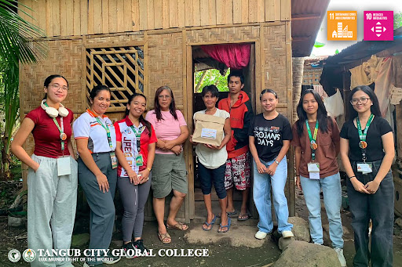
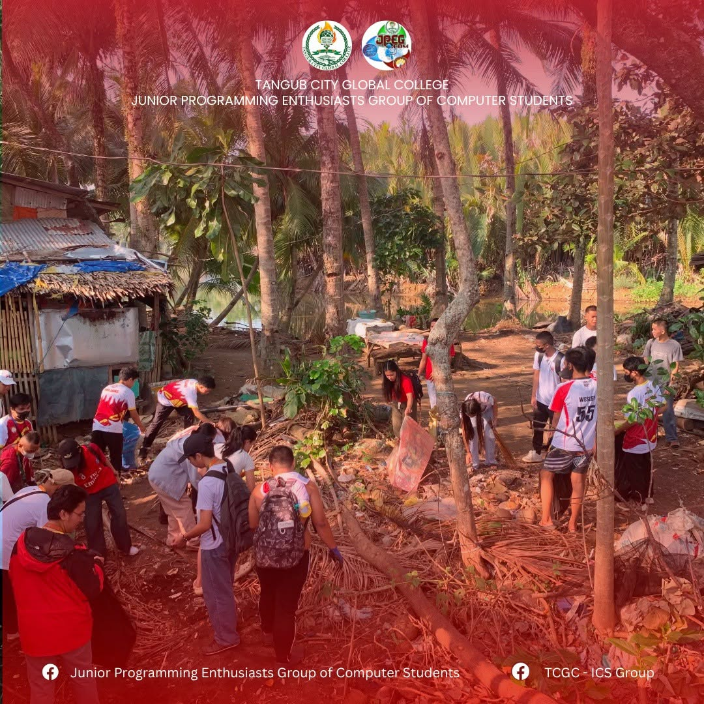
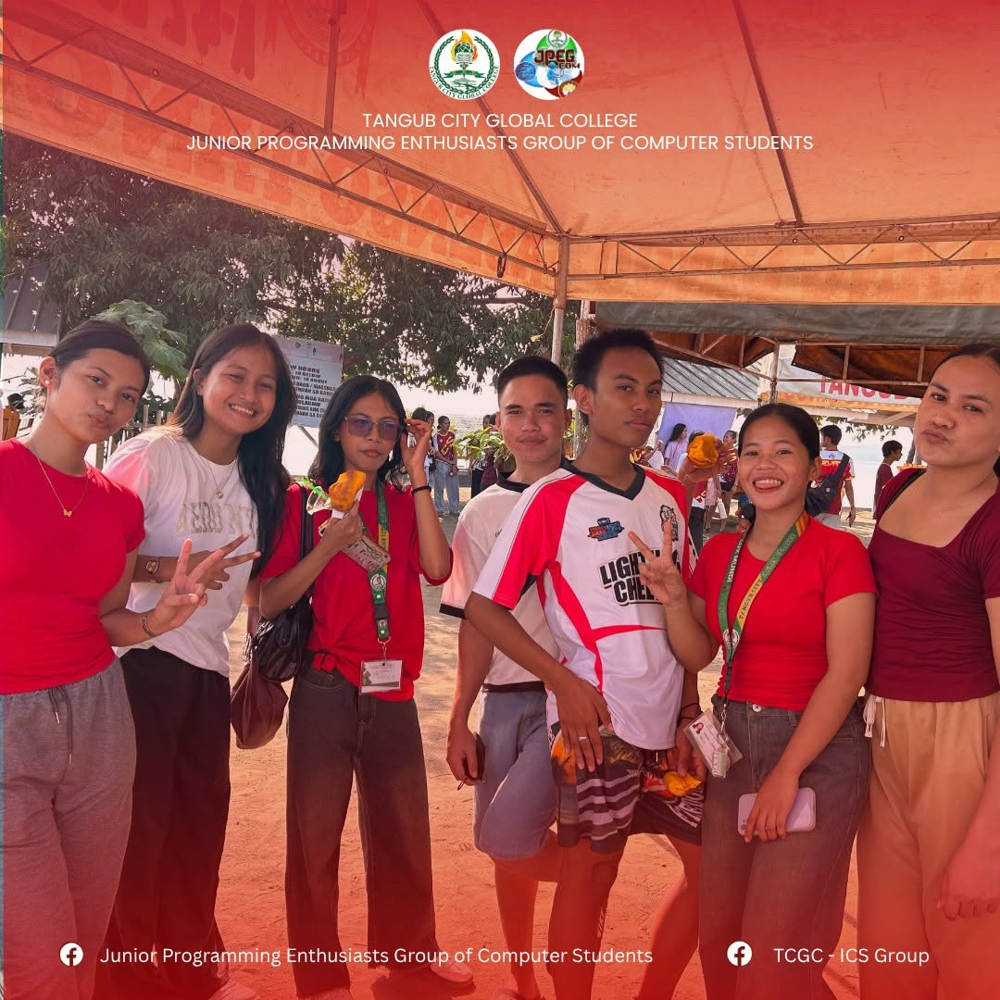
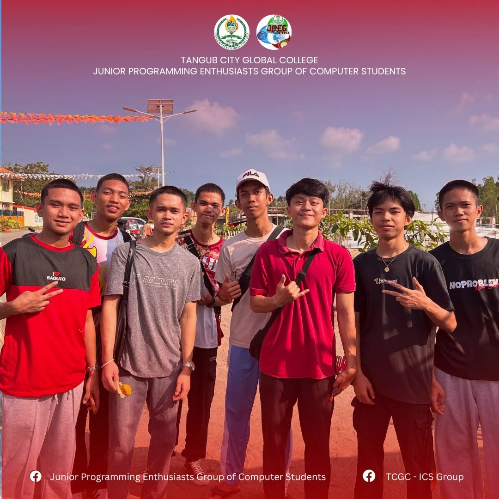
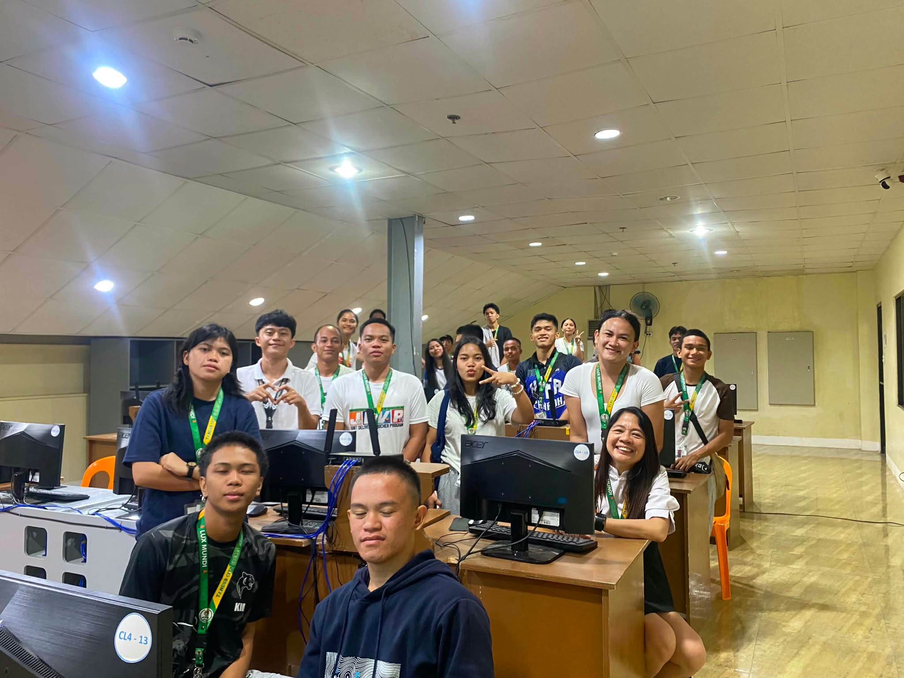

Serving Together, Shining Together
"Let your light shine before others, that they may see your good deeds and glorify your Father in heaven." — Matthew 5:16
📸 Our Journey of Service
Every smile shared, every hand extended, every community touched — this is what it means to be God-Centered.

Sharing Blessings
Delivering aid and hope to families in our community. Small packages, big love — because everyone deserves to feel cared for.
"It is more blessed to give than to receive." — Acts 20:35

Healing Our Home
Cleaning our surroundings, protecting nature, and preserving the beauty God gave us. We do not inherit the Earth from our ancestors — we borrow it from our children.
"The earth is the Lord's, and everything in it." — Psalm 24:1

Stronger Together
When we stand side by side, there is no challenge too great. United by purpose, guided by faith — we are the hands and feet of service.
"Two are better than one." — Ecclesiastes 4:9

Building a Better Tomorrow
We may be students, but we are already leaders. Service is not waiting for graduation — it is starting right now, where we are.
"Do not let anyone look down on you because you are young." — 1 Timothy 4:12

Skills With Purpose
We learn not just to earn, but to serve. Every line of code we master is a tool we can use to help others and build a better world.
"Whatever you do, work at it with all your heart." — Colossians 3:23
Rooted in Purpose
From these halls we go out to serve. TCGC does not just teach us — it inspires us to live as God-centered citizens, here and everywhere.
"Lux Mundi — Light of the World."
💡 How You Can Help
Volunteer
Join outreach, cleanup, and charity events. Your presence makes a difference.
Share What You Have
Donations — big or small — bring hope to those who need it most.
Care for Creation
Keep your surroundings clean. Plant trees. Reduce waste. Be a guardian of nature.
Spread Kindness
A kind word, a helping hand, a listening ear — these cost nothing but mean everything.
"Start where you are. Use what you have. Do what you can." — Arthur Ashe